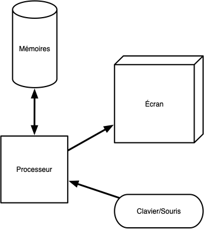

Architecture d'un ordinateur
Un ordinateur est composé de plusieurs composants qui interagissent entre eux :
- le processeur : exécute des instructions sur des variables. Instructions et variables sont prisent et manipulées dans la mémoire.
- mémoire vive : un espace de stockage rapide, mais volatile (se vide lorsque l'on éteint l'ordinateur). Peut-être vu comme un grand tableau ou chaque case est un byte. Comme on peut accéder à tout élément sans contrainte, cette mémoire est appelée RAM (pour Random Access Memory)
- périphériques, appelés device
- mémoire non volatile (stockage) : On ne peut pas toujours accéder à tout byte du tableau de stockage indépendamment. Il faut utiliser un protocole. Ces devices sont plus lent que la RAM mais sont non volatiles. Par exemple :
- disques durs : plus lent que la mémoire mais non volatile
- USB : encore plus lent qu'un disque dur mais déplaçable facilement
- réseau : encore plus lent que l'USB mais accessible de partout
- interfaces :
- entrée : clavier/souris
- sortie : écran/imprimante
- entrée/sortie : volant avec retour de force
- mémoire non volatile (stockage) : On ne peut pas toujours accéder à tout byte du tableau de stockage indépendamment. Il faut utiliser un protocole. Ces devices sont plus lent que la RAM mais sont non volatiles. Par exemple :
En regroupant tous les types de mémoires, on obtient le schéma (très) simplifié suivant :

L'architecture d'un ordinateur et les systèmes d'exploitations ont co-évolué. Les besoins des uns modifiant l'architecture des autres et réciproquement.
L'élément central qui permet à tous les composants d'un ordinateur de communiquer entre eux est la carte mère.
Carte mère
Mémoire
Processeur
Périphériques
On y accède via des protocoles d'accès. Ensuite chaque type de périphérique aura un ou plusieurs protocoles permettant son utilisation.
Exemple du réseau :
- protocole d'accès à la carte : PCie
- protocole d'utilisation :
- TCP
- UDP
- ...
Les périphériques présents sur tous les ordinateurs sont les périphériques de stockage, dont nous allons parler plus précisément :
Version détaillée
TBD : à refaire.